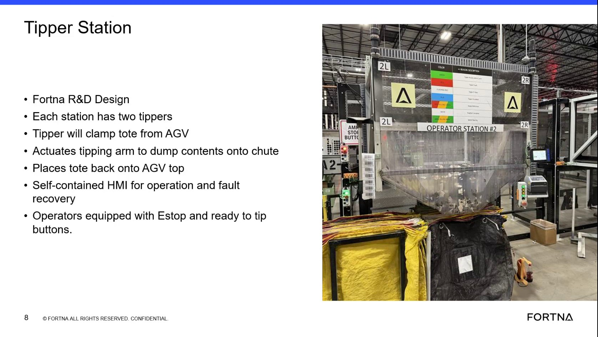

| Procedure ID | proc_operate_a_tipper_station_using_the_ready_to_tip_control_v1 |
|---|---|
| Title | Operate A Tipper Station Using The Ready-To-Tip Control |
| Procedure Type | operation |
| Primary Role | operator |
| Support Safe | Yes |
| Validation Status | needs_sme_review |
| Merge Status | source_finalized |
High-level operator procedure for normal tipper station use based on the training segment: a tote arrives from an AGV, the operator uses the station controls including the ready-to-tip button, and the tipper clamps, tips, discharges contents onto the chute, and returns the tote to the AGV. The source also notes a self-contained HMI is available for operation and fault recovery, but does not provide detailed screen navigation.
Use for the normal operator-facing tipper station handling flow described in the training source when a tote arrives from an AGV and the station is being operated using the ready-to-tip control.
Responsible role: operator
Instruction:
Go to the operator station and identify the tipper area. Note that the source states each operator station has two tippers.
Expected result:
The operator is positioned at the correct station and recognizes the tipper area and two-tipper arrangement.
Screens / Images:

Stop or Escalate If:
Responsible role: operator
Instruction:
Confirm the tote arrives from the AGV at the tipper station before proceeding with the normal tipping flow.
Expected result:
A tote is present at the tipper station from the AGV.
Screens / Images:
Stop or Escalate If:
Responsible role: operator
Instruction:
Use the operator station controls provided for tipping, including the ready-to-tip button identified in the source as the operator control for tipping readiness.
Expected result:
The operator has used the source-identified ready-to-tip control for the normal tipping process.
Screens / Images:
Stop or Escalate If:
Responsible role: operator
Instruction:
Observe the documented handling sequence: the tipper clamps the tote from the AGV, actuates the tipping arm to dump contents onto the chute, and places the tote back onto the AGV.
Expected result:
The tote is clamped, tipped to discharge contents onto the chute, and returned to the AGV.
Screens / Images:
Stop or Escalate If:
Responsible role: operator
Instruction:
Use the self-contained HMI as the station interface for operation if needed, based on the source statement that the HMI supports operation. Do not infer screen navigation or button sequences not shown in this segment.
Expected result:
The operator recognizes the HMI as the source-identified station interface for operation.
Screens / Images:
Stop or Escalate If: